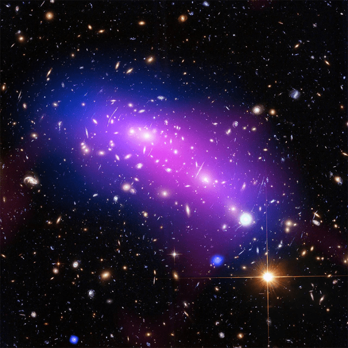
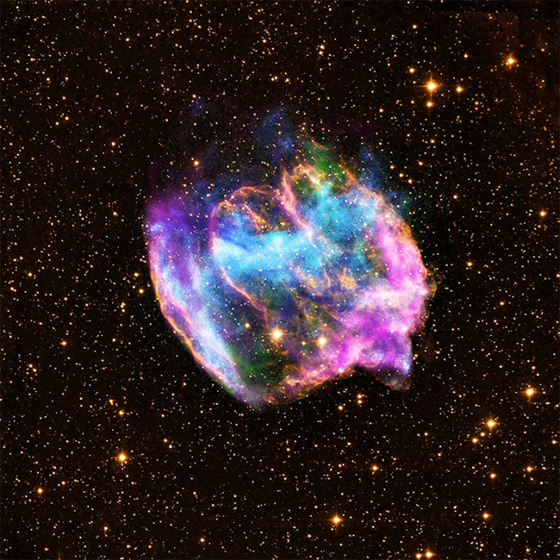

The universe began with a bang, and for the first few hundred million years, there was nothing but hydrogen and some helium atoms moving through the void. Then something happened. Somehow, in the roiling soup of plasma and free electrons suffusing the Big Bang’s embers, clouds of molecular hydrogen drew close enough together to ignite. The first stars were born.
Just to imagine such objects blinking into existence, let alone describe them using theoretical astrophysics, was revolutionary not very long ago. But today, astronomers are on the cusp of actually seeing these earliest stars. Through the James Webb Space Telescope, humans are newly capable of peering back through almost all of time, penetrating the expanding universe, past uncountable galaxies and nebulae and stars and their planets, to glimpse the first light to ever shine forth.
These luminous bodies, called Population III stars, represent not only the earliest light in the primordial universe but also our own beginnings. They were the first stars to fuse hydrogen and helium into heavier elements. They forged oxygen, carbon, silicon, and iron (what astronomers call “metals”) for the first time, deep in their massive stellar hearts. Their deaths set the course of the universe, led to the origin of our sun and, eventually, to life on Earth. Finding them and modeling their birth and death is therefore a way of understanding the deepest roots of everything that came after them.
Throughout 2025, astronomers shared a flurry of research papers on a preprint server and at scientific meetings, posing that some galaxies in JWST data could be radiating light from these primordial stars. But few researchers have agreed on any one claim. Meanwhile, theorists continue refining their expectations for what these stars should look like when their faint glows are captured by JWST’s sensitive instruments.
The difficulty and the importance of finding Population III stars makes them a sort of a “holy grail” among astronomers, says Pierluigi Rinaldi, an astronomer at the Space Telescope Science Institute in Baltimore.
“The people who see Population III stars will be the people who get a Nobel Prize,” he says.
Before the Earth, before the sun, before the sun’s stellar ancestors, and long before even the Milky Way, the universe was wildly different. During the “cosmic dark ages,” a period that lasted about 50 million years after the Big Bang, no stars shone. Influenced by gravity, dark matter—invisible, mysterious stuff we cannot directly study—was beginning to shepherd visible material together. Gas and dust started to clump, although their accumulation was altered by supersonic flows of gas still streaming forth from the Big Bang. Sometime between 50 million and 100 million years after the Big Bang, the clumps became concentrated enough, and dense enough, to collapse into the first stars.

A USEFUL CLUSTER: This galaxy cluster, called MACS J0416, helped astronomers magnify and study the more distant LAP1 galaxy, which may contain some of the first stars ever formed in our young universe. Credit: NASA.
These first stars are called Population III stars because of a somewhat backward ordering system. They are made only of primordial hydrogen and helium, which they forged into heavier elements such as carbon, oxygen, and iron. (“Metals” to astronomers describe any elements with more neutrons than hydrogen or helium.) The next stars to form were Population II, still old and scant in these heavy materials. And most stars now, for example our sun, are Population I stars, rich in heavier elements—the stuff that makes rocks, trees, diamonds, and us.
The sun and all other stars like it are made from the remains of their ancestors. As the Population III stars died, their hearts seeded the cosmos with every other element in the known universe. Although they are the long-lost progenitors of today’s matter, massive Pop III stars were likely not super common in the infant universe.
“We don’t expect lots of them to be forming, so it’s just going to be harder to see them,” says Mike Boylan-Kolchin, an astronomer at the University of Texas at Austin. “You’re helped out because they are more massive, so they should shine brightly, but seeing them unambiguously is hard.”
Theorists think Pop III stars could have been enormous, with masses the equivalent of 100 suns or more, and short-lived—flaming out within a few million years, incredibly fast for a star. They would have died in titanic explosions that could have cooled down those Big Bang-induced supersonic flows of gas and helped galaxies chock-full of stars to form even faster.
“The small structures where the Pop III stars first form are the building blocks of the galaxies. They are the little bits that build up the next generation,” says Eli Visbal, an astronomer at the University of Toledo in Ohio. “If you want a complete picture of galaxy formation, in particular how early galaxies form, you want to understand the initial conditions of the Pop III stars.”
Humans are newly capable of peering back through almost all of time to glimpse the first light to ever shine forth.
Astronomers used to think we would never be able to see them because they are so old, and therefore so far away. The oldest objects in the universe are far away, of course, because the universe is expanding in all directions. This also means the light from very early stars has been stretched to longer wavelengths as it traveled to telescopes that are either Earth-bound or Earth-adjacent.
But JWST was specially designed to detect longer wavelengths of light, specifically in the near-infrared range of the electromagnetic spectrum. The Hubble Space Telescope can see deep into the universe, but it only perceives the light we can see, optical light. And previous generations of infrared telescopes, like the Spitzer Space Telescope, did not have JWST’s sensitivity or power.
By using JWST instruments to study starlight’s composition, a technique called spectroscopy, astronomers can look for high concentrations of helium and hydrogen that could hint at the presence of primordial stars. But even JWST has a hard time distinguishing the oldest starlight ever produced. Though a few astronomers have claimed to pinpoint evidence of Pop III stars, it will be hard for anyone to convince the broader astrophysics community that JWST has really found a galaxy harboring them because it would be such a consequential find, says Claire Williams, a theoretical physicist at the University of California, Los Angeles who studies Pop III stars.
Still, some evidence is mounting.
In 2023, astronomers led by Roberto Maiolino at the University of Cambridge in the United Kingdom used JWST to observe a galaxy called GN-z11, which Hubble found in 2015 and which dates to just 400 million years after the Big Bang. They argued that the helium signature in GN-z11 suggested small clusters of Population III stars within it.

A STAR DIES:Pop III stars would have died much like this much closer and younger one, a mere 26,000 light-years away from Earth, in massive supernova explosions that would spew metals that would serve as the building blocks of stars we see today. Credit: X-ray: NASA/CXC/MIT/L.Lopez et al.; Infrared: Palomar; Radio: NSF/NRAO/VLA.
Other teams use a trick of gravity, predicted by Albert Einstein, to magnify and study distant stars. Also in 2023, astronomers led by Eros Vanzella at the National Institute of Astrophysics in Bologna, Italy, used a galaxy cluster called MACS J0416 to study a faraway galaxy. The galaxy cluster’s gravity warped the light of a more distant galaxy, the way a magnifying glass distorts and enlarges an object. Einstein predicted this “gravitational lensing” effect in 1915, and it has since been confirmed and used by Vanzella and other astronomers. Vanzella and his team dubbed the more distant galaxy “LAP1,” for “lensed and pristine 1,” finding that the system contained a huge amount of hydrogen and only a small amount of oxygen, hallmarks of primitive stars. It has two components, LAP1-A and LAP1-B.
JWST can image the LAP1 system as it appeared very early in the universe, during the epoch of reionization. In this period, the first stars had been born, and their sparkling light was charging all the neutral gas left over from the Big Bang. It is a tricky epoch to study, but a crucial one for understanding the first stars and their influence.
JWST’s sensitive starlight-sifting spectroscopy instruments and the incorporation of lensing make these elemental measurements possible. The output of these analytical techniques read something like a barcode, where the signature of a star’s light describes its chemical contents.
In July 2025, astronomers led by Kimihiko Nakajima at Caltech examined the distant object again. Based on LAP1-B’s barcode, there are no detectable metals in the galaxy. Nakajima and his colleagues argued it is actually a cluster of Pop III stars, adding up to about 2,700 suns worth of material. Astronomers now think LAP1-B is the most chemically primitive star-forming galaxy yet identified, and several teams of researchers are hard at work, further scrutinizing its light.
Visbal says he believes LAP1-B is the first object that meets the criteria for a Pop III star-hosting galaxy.
“The most compelling reason to me is just the amount of stars that are implied by how bright the object is,” he says. It would only take 10 stars, each weighing about 100 times the sun, to create the light shining forth from LAP1-B. That’s a good thing. A galaxy crowded with stars has likely had more time to form those stars, which means the earliest generation—Pop III stars—had likely begun dying, or at the very least blowing some metals around through their stellar winds.
“You don’t have a lot of time before you transition from Pop III to Pop II, ” he says. “We may be very close to the first star formation event in this location.”
Population III stars represent not only the earliest light in the primordial universe but also our own beginnings.
But not everyone is convinced the LAP1 system contains primordial stars. Williams, a theorist, says there could be other strange explanations for the unique chemical fingerprints of the galaxies. Some signatures that could appear to be Pop III stars might actually be Pop II stars, lurking behind a galaxy that absorbs their heavy-metal barcodes, for instance. Or what looks like a Pop III star could be a Pop II star with unexpected spectral characteristics, she says.
“Maybe there’s a weird Pop II, and that is still more likely than a Pop III,” she says. “We probably have these objects that tick a lot of the boxes of Pop III stars, but the level of confidence is not there.”
Other astronomers suggest that these systems might not contain stars at all, but that the barcodes could just be light from gas clouds. What’s more, there could be other Pop III candidates already lurking in JWST’s trove of data. One such object, dubbed GLIMPSE-16043, contains telltale spectral signatures of very young stars and seems to have very little metals. It contains “textbook features” expected of a Pop III galaxy, such as this paucity of metals and other signatures indicating the presence of hot, young stars, according to astronomers led by Seiji Fujimoto of the University of Toronto.
Pop III stars set the course for everything in the universe that came after them, including the cosmic mix of ingredients that ultimately led to us. And finding them could shed light not only on our origins but on some of the strangest questions in modern physics.
The early, weird universe—the one devoid of stars and their light—was still full of something, just something that did not glow. We call this stuff dark matter, because we quite literally can’t see it, though its gravitational influence is profound. Physicists have been trying to unmask it by looking for tiny particles, including weakly interacting ones that might have strange states of being that make them undetectable to us.
Pop III stars could actually shed light on the question of dark matter detection, according to Visbal. In simulations, Pop III stars form in small galaxies, their mass organized by small clumps of invisible dark matter. Their existence in certain circumstances could help physicists probe the very nature of dark matter.
One theory for dark matter calls for particles that are so small, they are altered by quantum mechanical effects. At universal scales, where halos of dark matter sculpt the fates of entire galaxy clusters, these effects can become noticeable, Visbal says. Dark matter halos that contain very low-mass particles could be subject to quantum mechanics’ uncertainty principle—the fact that it is impossible to measure both the exact momentum and position of an object at the same time—and would create a “fuzzy” structure that alters how galaxies grow. Such fuzzy dark matter structures would guide the development of galaxies differently than expected normal, cold dark matter.
During the “cosmic dark ages” no stars shone.
“So the objects where you would form Pop III stars in would no longer exist. And it would change where these first formed,” he says. “It is sort of a missing window. Since we don’t know what dark matter is, we should leave no stone unturned.”
Whether or not anyone has found a galaxy containing true Pop III stars—and whether or not they can tell us anything about dark matter—the fact that the hunt is even possible is thrilling for many astronomers. JWST’s ability to search for Pop III characteristics is just one example of how the 4-year-old telescope is upending humanity’s understanding of the cosmos.
“Astronomy is really fun because these big observatory projects get built, and then all of a sudden, every field gets revolutionized,” Williams says. “It’s not like individual groups making a new experiment, or developing a technique. We are all basking in the glory of this new thing that comes online.”
Williams started her Ph.D. program right before JWST launched in December 2020. She shared her first presentation a couple months afterward, studying galaxy simulations in the very early universe, only a few million years after the Big Bang. Her professors were skeptical, arguing that no one would be able to observe anything that occurred in such ancient epochs. But when the first images came down from JWST, they showed galaxies blazing just 300 million years after the Big Bang—way earlier than anyone expected was possible. Suddenly Williams’ very young universe simulations didn’t seem so far-fetched at all.
“It was a fun experience as a student, to come into this world just as this total revolution in what was possible was happening,” she says.
Some theorists say that the definitive discoveries of Pop III stars and other far-off phenomena are still a decade or two away. Future space telescope missions may be the ones to finally glimpse the first stars ever.
A mission called Hyperion, proposed and led by astronomers at the University of Arizona and Columbia University, would study star formation in the local—meaning, more recent—universe to better understand how hydrogen gas turns the creation of stars on and off. Understanding those mechanisms could inform our understanding of how the first stars may have formed, too.
But the very earliest era of time, a few tens of millions of years after the Big Bang, is the best hope for finding the first stars, says Boylan-Kolchin. JWST is more of a wayfinder for a possible future telescope, in that sense.
“We now know how to look, and where to look,” he says. “That makes it easier for people to come up with the technology to follow this up and say for sure, ‘This is a Pop III star.’ ”
One day, maybe soon, someone will be able to do that. Some future astronomer will be able to point to an image of an unspeakably distant, achingly old galaxy, and sift its ancient light. They will find nothing but the signature of hydrogen, the universe’s first element and the stuff from which we all came, and trace that light to the very first stars—the ancestors of everything that has shone since. 
Lead image: This artist’s conception depicts how the formation of the universe’s first stars may have appeared. Dense clouds of hydrogen and helium likely collapsed inward, increasing pressure and temperature until hydrogen atoms began to fuse, giving birth to the first light in a dark void. Credit: NASA, STScI A. Schaller.
Källförteckning
- Originalartikel: https://nautil.us/the-birth-of-light-1270615/